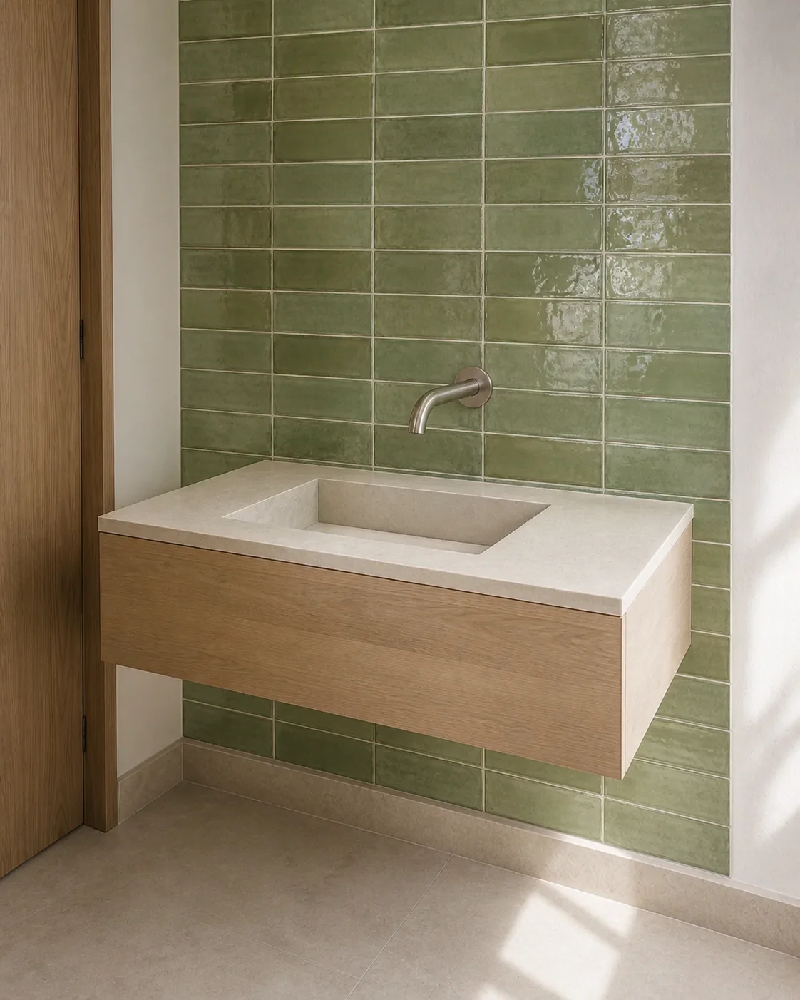
01
Studio preview
Compact cloakroom basins
Small made-to-measure basins for tight rooms, narrow walls and shallow depths.
Explore material ideasBespoke bathroom basins · London
Made-to-measure porcelain basins for cloakrooms, vanity units, floating installations and wall-to-wall bathroom layouts.
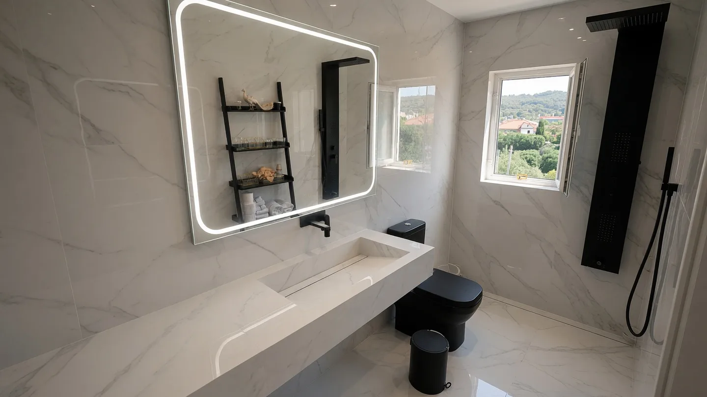
A made-to-measure bathroom basin begins with exact dimensions and the bathroom layout. We fabricate each porcelain basin around tap position, drainage, structural support, storage and the adjoining wall or vanity surfaces.
The result is a bespoke washbasin resolved as part of the room: proportioned for the space and detailed before the slab is cut.
Explore our bespoke porcelain sinks and basin fabricationEach form is adjusted around the available wall, plumbing, clearances and the way the bathroom will be used.

Studio preview
Small made-to-measure basins for tight rooms, narrow walls and shallow depths.
Explore material ideas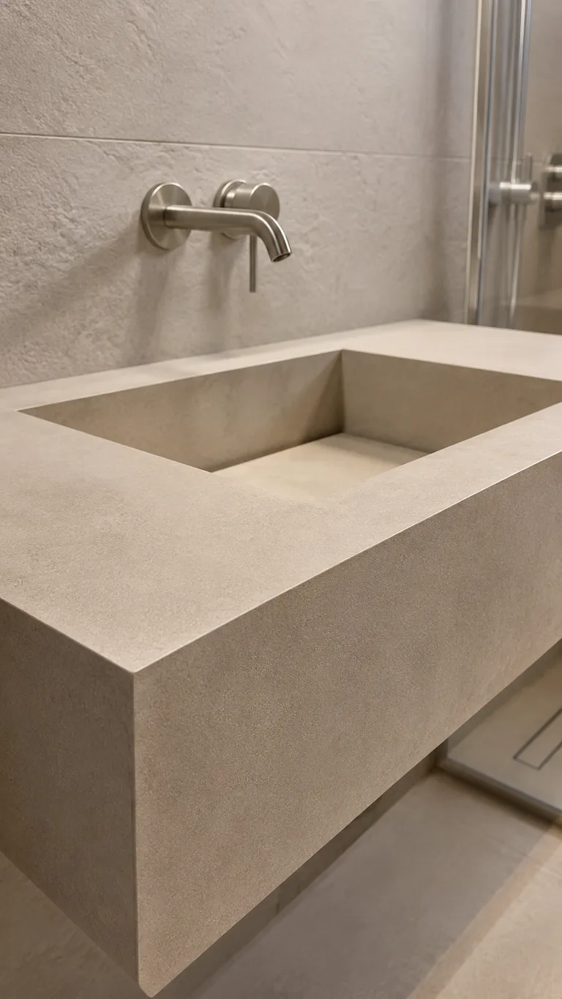
Completed work
Wall-hung porcelain basins with a clean architectural form and concealed support.
View project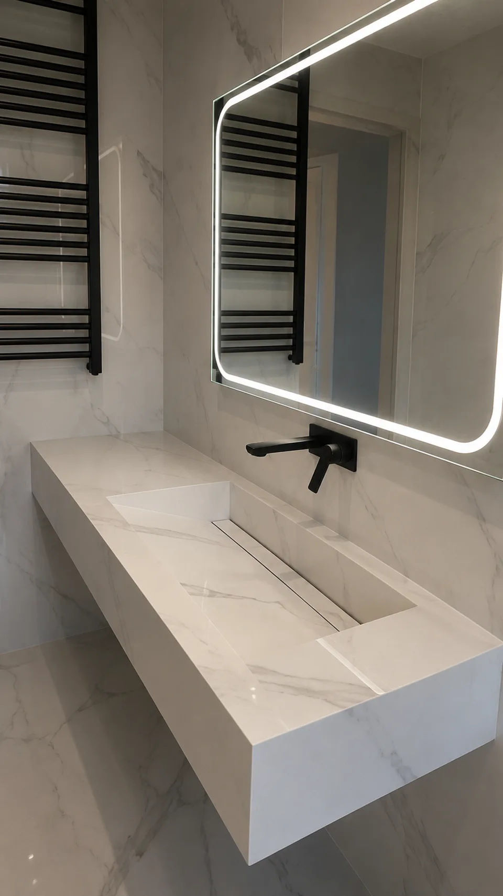
Completed work
Extended basin runs fitted across vanity storage or between walls where the room allows.
View project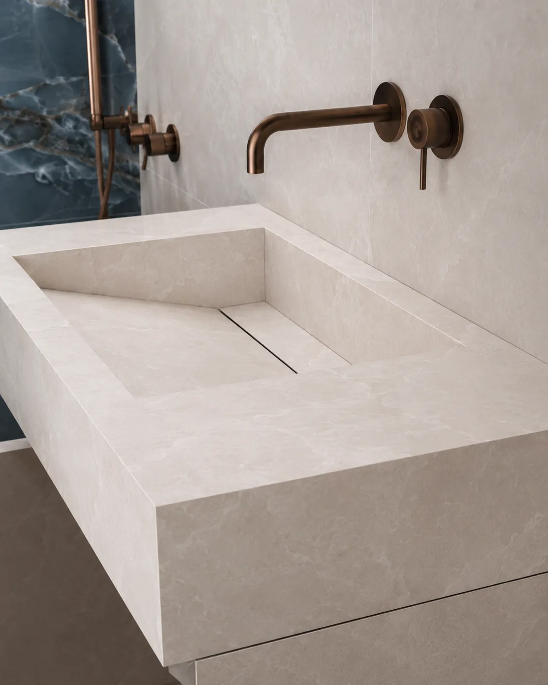
Completed work
Porcelain basin, vanity top and storage resolved as one fitted composition.
View projectThere is no fixed catalogue size. The basin is balanced against the room, the slab and the practical route into place.
Measure twice Most designs are confirmed after room measurements. A site measure or template visit may be needed for wall-to-wall work, irregular walls or restricted access.

Tap position and drainage are resolved with the basin geometry, not added afterwards. That keeps the water path, clearances and access practical while preserving a quiet finish.
Small spaces
A compact room needs a basin drawn around the wall, doorway and circulation space. Made-to-measure compact cloakroom basins can use a shallow projection in awkward or narrow rooms, sit within a corner or adopt a wall-hung layout to keep the floor clear. Where deck space is limited, the tap can move to the wall while the bowl, fall and waste remain practical. For compact vanity units, basin and storage are proportioned together so neither feels added on. The result protects comfort and access without losing the architectural character of the room.
Discuss a compact basin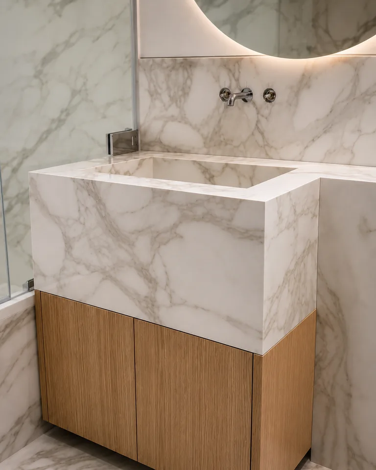
The studies below are studio material previews, included to explore colour and movement. Completed projects are identified separately throughout this page.
Explore the tile library
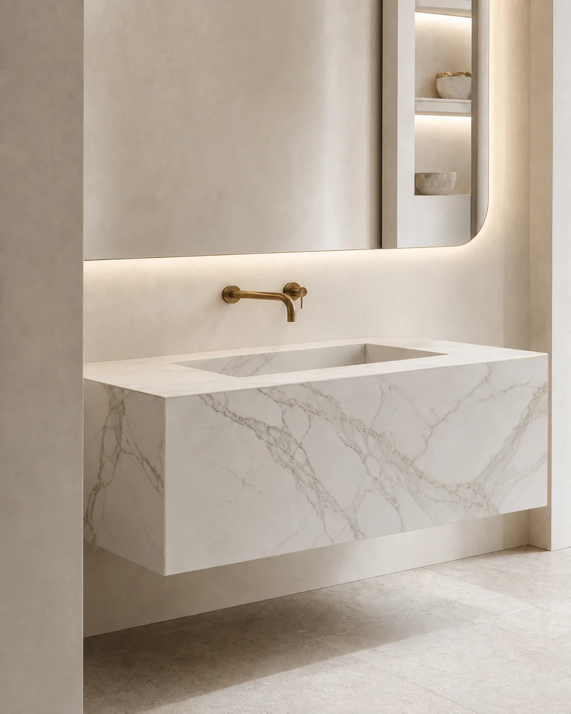
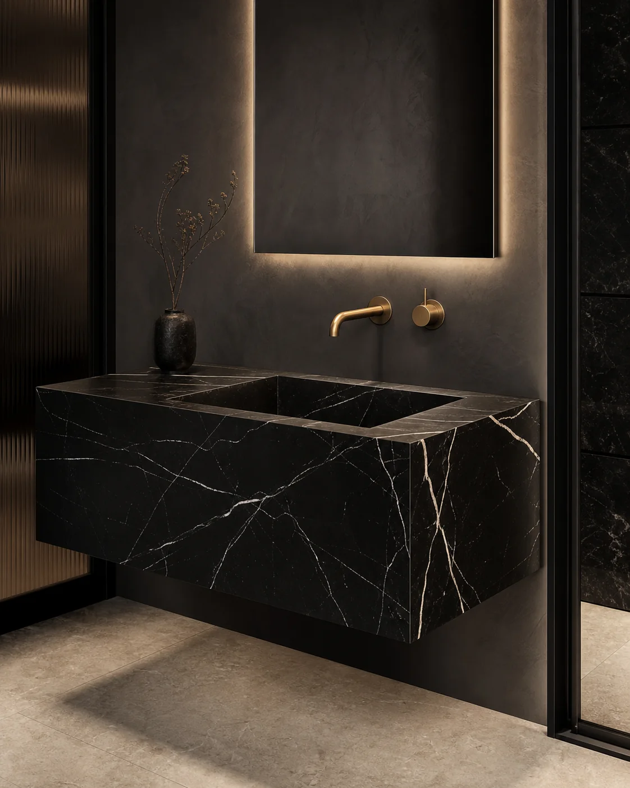
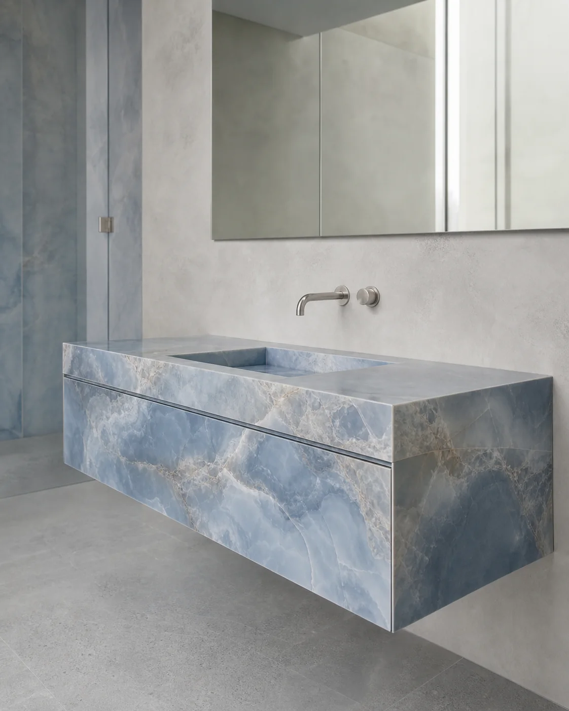
A concise sequence keeps the room, fabrication and installation aligned.
Photos, rough dimensions, postcode and tap preference.
Basin form, drainage, support and porcelain material.
Cut, mitre, assemble and check the water path.
Align, support, connect and finish adjoining surfaces.
Selected Artiling projects across compact, floating and double-basin layouts.
View all projects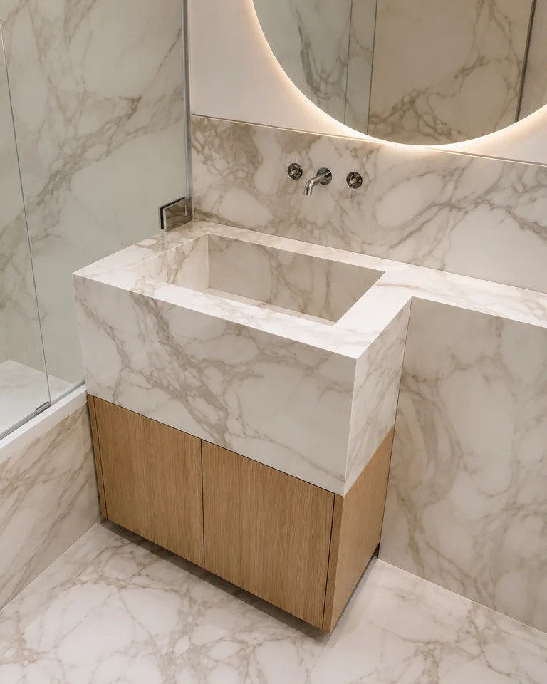
Wall taps, a compact bowl and fitted oak storage.
View completed project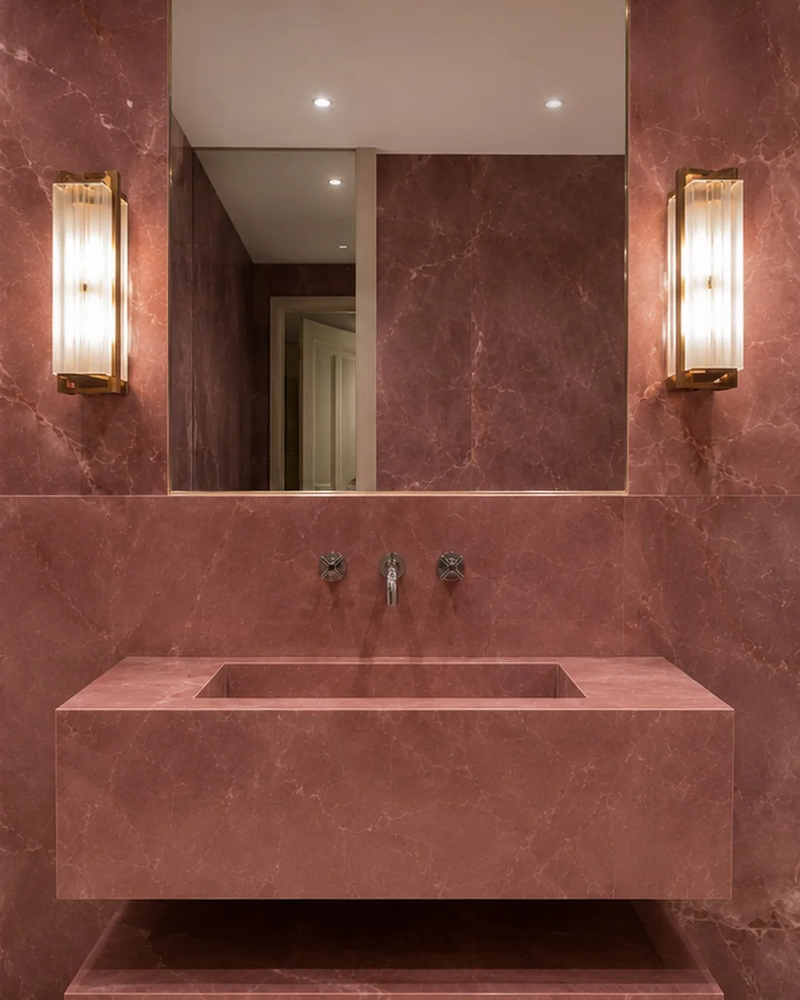
An integrated basin, floating shelf and continuous surface.
View completed project
Two basin positions across one continuous double-trough form.
View completed projectFrequently asked questions
Useful starting points for commissioning a made-to-measure bathroom basin.
Cost depends on the basin size, porcelain slab, geometry, edge detail, support and installation requirements. A quotation can usually be prepared from room photos and rough dimensions.
Yes, subject to the available slab dimensions, drainage position, structural support and installation access.
Yes. Compact wall-hung and vanity-integrated porcelain basins can be designed for small cloakrooms and restricted spaces.
Yes. The same porcelain can often continue across the basin, splashback, vanity surfaces and adjoining bathroom walls.
Yes. Wall-mounted and deck-mounted tap arrangements can both be incorporated into the basin design.
Fabrication, delivery and installation options are available depending on the project scope and location.
The terms are often interchangeable in bathroom use, although basin or washbasin is more commonly used in the UK.
Start with the room
Send room photos, rough width and depth, tap preference and the project postcode. We will advise on the next practical step.
Request a quote